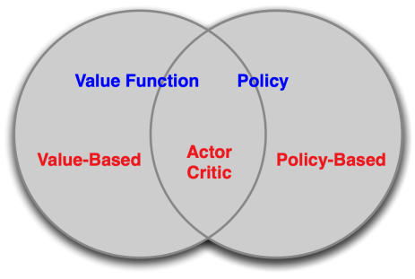
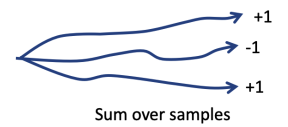
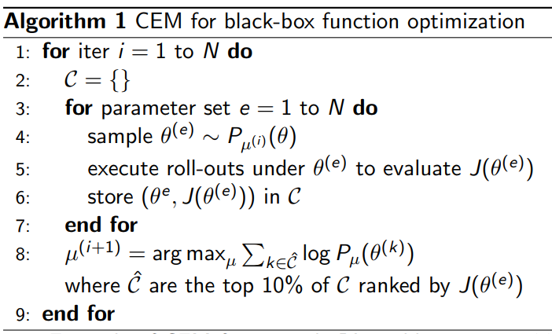
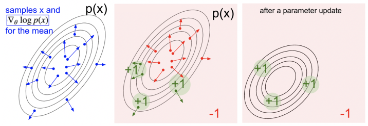
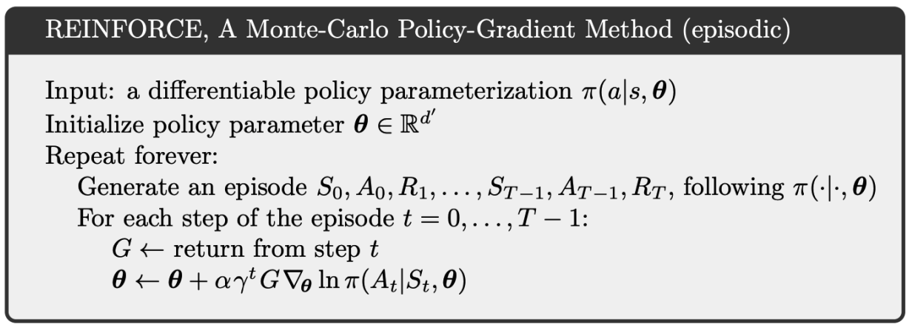
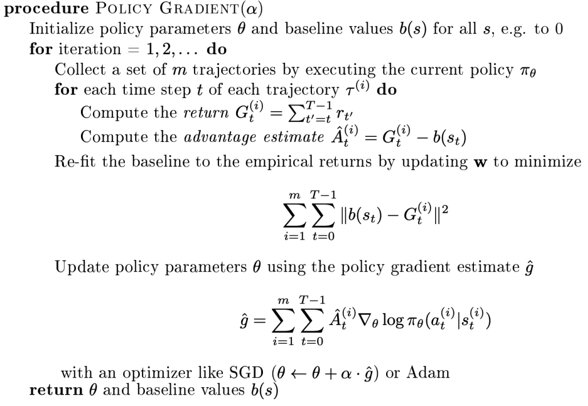
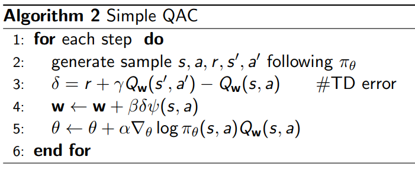
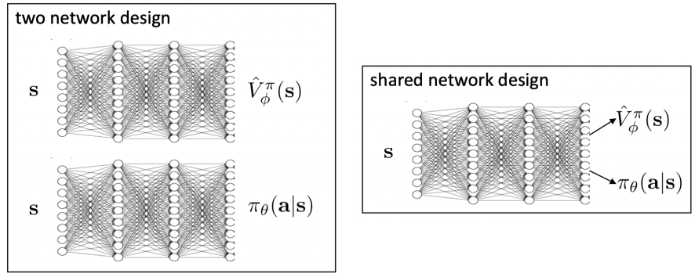
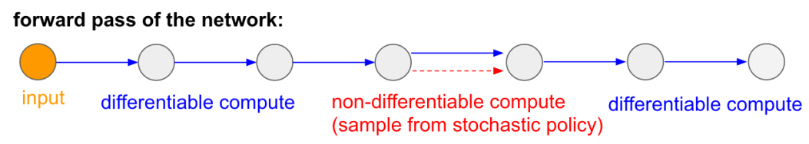
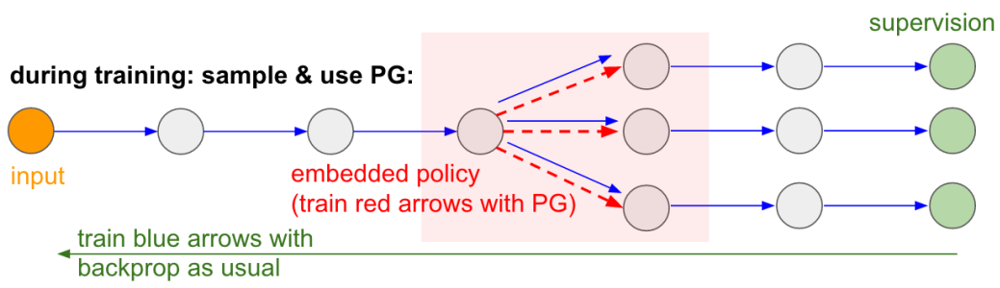

1.Policy-based RL 1.1 Value-base RL vs Policy-based RL Value-based RL : to learn value function; implicit policy based on the value function
Policy-based RL : no value function; to learn policy directly
Actor-critic : to learn both policy and value function

1.2 Policy-based RL 的优势与劣势 具有能得到更好的 收敛特性 ：保证收敛于一个 局部最优（最坏情况）或全局最优（最好情况） 策略梯度在高维动作空间更有效 策略梯度可以学习随机策略，而值函数不能（例如石头剪刀布游戏，基于价值的 实际情况通常只能学到局部最优 评估的策略具有很大的方差 1.3 Policy 分类 Deterministic ：给定一个状态，返回要采取的某个动作。
Stochastic ：给定一个状态，返回一个概率分布。（类似分类任务返回得到不同类别的概率，这种形式更常用）
1.4 策略优化目标 定义一个最优策略带参函数 π θ ( s , a ) {\pi}_{\theta}(s, a) π θ ( s , a ) ，表示最优策略 Objective : Given a policy approximator π θ ( s , a ) {\pi}_{\theta}(s, a) π θ ( s , a ) with parameter θ \theta θ , find the best θ \theta θ Question: How do we measure the quality of a policy π θ {\pi}_{\theta} π θ ? In episodic environments we can use the start value
即在有终止条件的环境下，假设 π θ ( s , a ) πθ(s,a) π θ ( s , a ) 后能得到一种策略。所以希望使用 J 1 ( θ ) = V π θ ( s 1 ) = E π θ [ v 1 ] J_1(\theta)=V^{\pi \theta}(s_1) = E_{\pi \theta}[v1] J 1 ( θ ) = V π θ ( s 1 ) = E π θ [ v 1 ] In continuing environments :
即在连续无终止环境下，就不能用 d π θ dπθ d π θ 表达马尔科夫链的一种稳态分布。
we can use the average value 马尔科夫链每个状态乘以稳态分布值来表示最优策略下的目标函数。
J a v V ( θ ) = ∑ s d π θ ( s ) V π θ ( s ) J_{avV}(\theta)=\sum_{s}d^{\pi \theta}(s)V^{\pi \theta}(s) J a v V ( θ ) = s ∑ d π θ ( s ) V π θ ( s )
or the average reward per time-step 在不同状态下（外求和）用
J a v R ( θ ) = ∑ s d π θ ( s ) ∑ a π θ ( s , a ) R ( s , a ) J_{avR}(\theta)=\sum_{s}d^{\pi \theta}(s) \sum_a \pi \theta (s,a)R(s,a) J a v R ( θ ) = s ∑ d π θ ( s ) a ∑ π θ ( s , a ) R ( s , a ) where d π θ d^{\pi \theta} d π θ is stationary distribution of Markov chain for π θ \pi_{\theta} π θ The value of the policy is defined as
J ( θ ) = E τ ∼ π θ [ ∑ t R ( s t τ , a t τ ) ] ≈ 1 m ∑ m ∑ t R ( s t m , a t m ) J(\theta) = E_{\tau \sim \pi \theta}[\sum_tR(s^{\tau}_t, a^{\tau}_t)] \\
\approx \frac{1}{m} \sum_m \sum_t R(s^m_t, a^m_t) J ( θ ) = E τ ∼ π θ [ t ∑ R ( s t τ , a t τ )] ≈ m 1 m ∑ t ∑ R ( s t m , a t m ) It is the same as the value function we defined in the value-based RL
每种策略可以看成不同的轨迹，不断采样时求取轨迹的均值得到最佳策略。

τ \tau τ is a trajectory sampled from the policy function π θ \pi_{\theta} π θ
Here we ignore discount first The goal of policy-based RL
θ ∗ = a r g m a x θ E τ ∼ π θ [ ∑ t R ( s t τ , a t τ ) ) ] \theta^*=\underset{\theta}{arg max} E_{\tau \sim \pi \theta}[\sum_t R(s^{\tau}_t, a^{\tau}_t))] θ ∗ = θ a r g ma x E τ ∼ π θ [ t ∑ R ( s t τ , a t τ ))] 1.5 策略函数的形式 前面说完用不同角度的定义来表示策略函数目标，但是没有说明具体的函数形式，这里可以采用两种策略函数形式来具体定义策略函数。
（1）Softmax policy Simple policy model : weight actions using linear combination of features ϕ ( s , a ) T θ \phi(s,a)^T \theta ϕ ( s , a ) T θ Probability of action is proportional to the exponetiated weight
π θ ( s , a ) = e x p ϕ ( s , a ) T θ ∑ a ′ e x p ϕ ( s , a ′ ) T θ \pi_{\theta}(s,a)=\frac{exp^{\phi(s,a)^T \theta}}{\sum_{a'}exp^{\phi(s,a')^T \theta}} π θ ( s , a ) = ∑ a ′ e x p ϕ ( s , a ′ ) T θ e x p ϕ ( s , a ) T θ ∇ θ l o g π θ ( s , a ) = ϕ ( s , a ) − E π θ [ ϕ ( s , . . . ) ] \nabla_{\theta}log{\pi}_{\theta}(s,a)=\phi(s,a)-E_{\pi_{\theta}}[\phi(s,...)] ∇ θ l o g π θ ( s , a ) = ϕ ( s , a ) − E π θ [ ϕ ( s , ... )] （2）Gaussian Policy In continuous action spaces, a Gaussian policy can be naturally defined
Mean is a linear combination of state features μ ( s ) = ϕ ( s ) T θ \mu(s)=\phi(s)^T\theta μ ( s ) = ϕ ( s ) T θ Variance may be fixed σ 2 \sigma^2 σ 2 or can also be parameterized Policy is Gaussian, the continuous a ∼ N ( μ ( s ) , σ 2 ) a \sim N(\mu(s), \sigma^2) a ∼ N ( μ ( s ) , σ 2 ) ∇ θ l o g π θ ( s , a ) = ( a − μ ( s ) ) ϕ ( s ) σ 2 \nabla_{\theta}log \pi_\theta(s,a)=\frac{(a-\mu(s))\phi(s)}{\sigma^2} ∇ θ l o g π θ ( s , a ) = σ 2 ( a − μ ( s )) ϕ ( s ) 1.6 优化目标函数方法 Policy-based RL is an optimization problem that find θ \theta θ that maximizes J ( θ ) J(θ) J ( θ ) If J ( θ ) J(θ) J ( θ ) is differentiable（可微） , we can use gradient-based methods:
gradient ascend
conjugate gradient
quasi-newton If J ( θ ) J(θ) J ( θ ) is non-differentiable（不可微） or hard to compute the derivative, some derivative-free black-box optimization methods:
Cross-entropy method (CEM)
Hill climbing
Evolution algorithm 当目标函数不可微时，只能采用黑箱优化的方法的进行优化，通过输出结果调整优化。
1.7 Policy Gradient Analytically Assume policy π θ πθ π θ is differentiable whenever it is no-zero and we can compute the gradient ∇ θ π θ ( s , a ) \nabla_{\theta}\pi_\theta(s,a) ∇ θ π θ ( s , a ) Likelihood ratios exploit the following tricks
∇ θ π θ ( s , a ) = π θ ( s , a ) ∇ θ π θ ( s , a ) π θ ( s , a ) = π θ ( s , a ) ∇ θ l o g π θ ( s , a ) \nabla_{\theta}\pi_\theta(s,a) = \pi_\theta(s,a) \frac{\nabla_\theta\pi_\theta(s,a)}{\pi_\theta(s,a)} \\
= \pi_\theta(s,a) \nabla_\theta log\pi_\theta(s,a) ∇ θ π θ ( s , a ) = π θ ( s , a ) π θ ( s , a ) ∇ θ π θ ( s , a ) = π θ ( s , a ) ∇ θ l o g π θ ( s , a ) The score function is ∇ θ l o g π θ ( s , a ) \nabla_{\theta}log\pi_\theta(s,a) ∇ θ l o g π θ ( s , a ) 1.8 交叉熵 θ ∗ = a r g m a x J ( θ ) \theta^*=argmax ~ J(\theta) θ ∗ = a r g ma x J ( θ ) Treat J ( θ ) J(\theta) J ( θ ) as a black box score function (not differentiable) 
1.9 有限差分法 Finite Difference Method To evaluate policy gradient of π θ ( s , a ) πθ(s, a) π θ ( s , a ) For each dimension k ∈ [ 1 , n ] k \in [1, n] k ∈ [ 1 , n ]
estimate k t h kth k t h partial derivative of objective function by perturbing θ θ θ by a small amount ϵ \epsilon ϵ in k t h kth k t h dimension ∂ J ( θ ) ∂ θ k ≈ J ( θ + ϵ μ k ) − J ( θ ) ϵ \frac{\partial J(\theta)}{\partial \theta_k} \approx \frac{J(\theta + \epsilon \mu_k) - J(\theta)}{\epsilon} ∂ θ k ∂ J ( θ ) ≈ ϵ J ( θ + ϵ μ k ) − J ( θ ) where μ k \mu_k μ k is unit vector with 1 in k t h kth k t h component, 0 else where uses n n n evaluations to compute policy graident in total n n n dimensions though noisy and inefficient, but works for arbitrary policies, even if policy is not differentiable.
2.Monte-Carlo policy gradient 2.1 Policy Gradient for One-Step MDPs 初始化
Consider a simple class of one-step MDPs
Starting in state s ∼ d ( s ) s ∼ d(s) s ∼ d ( s )
Terminating after one time-step with reward r = R ( s , a ) r = R(s, a) r = R ( s , a ) Use likelihood ratios to compute the policy gradient
J ( θ ) = E π θ [ r ] = ∑ s ∈ S d ( s ) ∑ a ∈ A π θ ( s , a ) r \begin{align}
J(\theta) &= E_{\pi \theta}[r] \\
&= \sum_{s \in S} d(s) \sum_{a \in A} \pi_\theta(s,a)r
\end{align} J ( θ ) = E π θ [ r ] = s ∈ S ∑ d ( s ) a ∈ A ∑ π θ ( s , a ) r ∇ θ J ( θ ) = ∑ s ∈ S d ( s ) ∑ a ∈ A π θ ( s , a ) ∇ θ l o g π θ ( s , a ) r = E π θ [ r ∇ θ l o g π θ ( s , a ) ] \nabla_\theta J(\theta) = \sum_{s \in S}d(s) \sum_{a \in A} \pi_\theta(s,a) \nabla_\theta log \pi_\theta(s,a) r \\
= E_{\pi \theta}[r \nabla_\theta log \pi_\theta(s,a)] ∇ θ J ( θ ) = s ∈ S ∑ d ( s ) a ∈ A ∑ π θ ( s , a ) ∇ θ l o g π θ ( s , a ) r = E π θ [ r ∇ θ l o g π θ ( s , a )] 2.2 Policy Gradient for Multi-Step MDPs 区别于单步
Denote a state-action trajectory from one episode as τ = ( s 1 , a 0 , r 1 , . . . , s T − 1 , a T − 1 , r T , s T ) ∼ ( π θ , P ( s t + 1 ∣ s t , a t ) ) \tau=(s_1, a_0, r_1, ..., s_{T-1}, a_{T-1}, r_T, s_T) \sim (\pi_\theta, P(s_{t+1}|s_t, a_t)) τ = ( s 1 , a 0 , r 1 , ... , s T − 1 , a T − 1 , r T , s T ) ∼ ( π θ , P ( s t + 1 ∣ s t , a t )) Denote R ( τ ) = ∑ t = 0 T − 1 R ( s t , a t ) R(\tau) = \sum_{t=0}^{T-1}R(s_t, a_t) R ( τ ) = ∑ t = 0 T − 1 R ( s t , a t ) as the sum of rewards over a trajectory τ \tau τ J ( θ ) = E π θ [ ∑ t = 0 T − 1 R ( s t , a t ) ] = ∑ τ P ( τ , θ ) R ( τ ) J(\theta) = E_{\pi_\theta}[\sum_{t=0}^{T-1}R(s_t, a_t)]=\sum_{\tau}P(\tau, \theta)R(\tau) J ( θ ) = E π θ [ t = 0 ∑ T − 1 R ( s t , a t )] = τ ∑ P ( τ , θ ) R ( τ ) where P ( τ , θ ) = μ ( s 0 ) ∏ t = 0 T − 1 π θ ( a t ∣ s t ) p ( s t + 1 ∣ s t , a t ) P(\tau, \theta)=\mu(s_0) \prod_{t=0}^{T-1} \pi_\theta(a_t|s_t)p(s_{t+1}|s_t, a_t) P ( τ , θ ) = μ ( s 0 ) ∏ t = 0 T − 1 π θ ( a t ∣ s t ) p ( s t + 1 ∣ s t , a t ) denotes the probability over trajectories when executing the policy π θ \pi_\theta π θ Then our goal is to find the policy parameter θ \theta θ θ ∗ = a r g m a x θ J ( θ ) = a r g m a x θ ∑ τ P ( τ , θ ) R ( τ ) \theta^*=\underset{\theta}{argmax} J(\theta)=\underset{\theta}{argmax} \sum_{\tau}P(\tau, \theta)R(\tau) θ ∗ = θ a r g ma x J ( θ ) = θ a r g ma x τ ∑ P ( τ , θ ) R ( τ ) Take the gradient with respect to θ \theta θ : ∇ θ J ( θ ) = ∇ θ ∑ τ P ( τ , θ ) R ( τ ) = ∑ τ ∇ θ P ( τ , θ ) R ( τ ) = ∑ τ P ( τ , θ ) P ( τ , θ ) ∇ θ P ( τ , θ ) R ( τ ) = ∑ τ P ( τ , θ ) R ( τ ) ∇ θ P ( τ , θ ) P ( τ , θ ) = ∑ τ P ( τ , θ ) R ( τ ) ∇ θ l o g P ( τ , θ ) \begin{align}
\nabla_\theta J(\theta)
&= \nabla_\theta \sum_{\tau}P(\tau, \theta) R(\tau) \\
&= \sum_{\tau} \nabla_\theta P(\tau, \theta) R(\tau) \\
&=\sum_{\tau} \frac{P(\tau, \theta)}{P(\tau, \theta)} \nabla_\theta P(\tau, \theta)R(\tau) \\
& = \sum_{\tau} P(\tau, \theta) R(\tau) \frac{\nabla_\theta P(\tau, \theta)}{P(\tau, \theta)} \\
& =\sum_{\tau} P(\tau, \theta) R(\tau) \nabla_\theta log P(\tau, \theta)
\end{align}
∇ θ J ( θ ) = ∇ θ τ ∑ P ( τ , θ ) R ( τ ) = τ ∑ ∇ θ P ( τ , θ ) R ( τ ) = τ ∑ P ( τ , θ ) P ( τ , θ ) ∇ θ P ( τ , θ ) R ( τ ) = τ ∑ P ( τ , θ ) R ( τ ) P ( τ , θ ) ∇ θ P ( τ , θ ) = τ ∑ P ( τ , θ ) R ( τ ) ∇ θ l o g P ( τ , θ ) 因为 P ( τ , θ ) P(\tau , \theta) P ( τ , θ ) 是一个不断连乘的过程，计算梯度时这里用个小技巧：乘以一个 P ( τ , θ ) P(\tau , \theta) P ( τ , θ ) 除以一个 P ( τ , θ ) P(\tau , \theta) P ( τ , θ ) ，将梯度变成 Approximate with empirical estimate for m m m sample paths under policy π θ \pi_\theta π θ ∇ θ J ( θ ) ≈ 1 m ∑ i = 1 m R ( τ i ) ∇ θ l o g P ( τ i , θ ) \nabla_\theta J(\theta) \approx \frac{1}{m} \sum_{i=1}^{m}R(\tau_i) \nabla_\theta log P(\tau_i, \theta) ∇ θ J ( θ ) ≈ m 1 i = 1 ∑ m R ( τ i ) ∇ θ l o g P ( τ i , θ ) 在上式中用 2.3 Decomposing the Trajectories into States and Actions Approximate with empirical estimate for m m m sample paths under policy π θ \pi_\theta π θ ∇ θ J ( θ ) ≈ 1 m ∑ i = 1 m R ( τ i ) ∇ θ l o g P ( τ i , θ ) \nabla_\theta J(\theta) \approx \frac{1}{m} \sum_{i=1}^{m}R(\tau_i) \nabla_\theta log P(\tau_i, \theta) ∇ θ J ( θ ) ≈ m 1 i = 1 ∑ m R ( τ i ) ∇ θ l o g P ( τ i , θ ) Decompose ∇ θ l o g P ( τ , θ ) \nabla_\theta log P(\tau, \theta) ∇ θ l o g P ( τ , θ ) ∇ θ l o g P ( τ , θ ) = ∇ θ l o g [ μ ( s 0 ) ∏ t = 0 T − 1 π θ ( a t ∣ s t ) p ( s t + 1 ∣ s t , a t ) ] = ∇ θ [ l o g μ ( s 0 ) + ∏ t = 0 T − 1 l o g π θ ( a t ∣ s t ) + l o g p ( s t + 1 ∣ s t , a t ) ] = ∑ t = 0 T − 1 ∇ θ l o g π θ ( a t ∣ s t ) \begin{align}
\nabla_\theta log P(\tau, \theta)
& = \nabla_\theta log [\mu(s_0) \prod_{t=0}^{T-1} \pi_\theta(a_t|s_t)p(s_{t+1}|s_t, a_t)] \\
& =\nabla_\theta [log\mu(s_0) + \prod_{t=0}^{T-1} log\pi_\theta(a_t|s_t) + log p(s_{t+1}|s_t, a_t)] \\
&= \sum_{t=0}^{T-1} \nabla_\theta log \pi_\theta(a_t|s_t)
\end{align} ∇ θ l o g P ( τ , θ ) = ∇ θ l o g [ μ ( s 0 ) t = 0 ∏ T − 1 π θ ( a t ∣ s t ) p ( s t + 1 ∣ s t , a t )] = ∇ θ [ l o gμ ( s 0 ) + t = 0 ∏ T − 1 l o g π θ ( a t ∣ s t ) + l o g p ( s t + 1 ∣ s t , a t )] = t = 0 ∑ T − 1 ∇ θ l o g π θ ( a t ∣ s t ) log 2.4 Likelihood Ratio Policy Gradient Then our goal is to find the policy parameter θ \theta θ θ ∗ = a r g m a x θ J ( θ ) = a r g m a x θ ∑ τ P ( τ , θ ) R ( τ ) \theta^*=\underset{\theta}{argmax} J(\theta)=\underset{\theta}{argmax} \sum_{\tau}P(\tau, \theta)R(\tau) θ ∗ = θ a r g ma x J ( θ ) = θ a r g ma x τ ∑ P ( τ , θ ) R ( τ ) Approximate with empirical estimate for m sample paths under policy π θ \pi_\theta π θ ∇ θ J ( θ ) ≈ 1 m ∑ i = 1 m R ( τ i ) ∇ θ l o g P ( τ i , θ ) \nabla_\theta J(\theta) \approx \frac{1}{m} \sum_{i=1}^{m}R(\tau_i) \nabla_\theta log P(\tau_i, \theta) ∇ θ J ( θ ) ≈ m 1 i = 1 ∑ m R ( τ i ) ∇ θ l o g P ( τ i , θ ) Then we have ∇ θ l o g P ( τ , θ ) = ∑ t = 0 T − 1 ∇ θ l o g π θ ( a t ∣ s t ) \nabla_\theta log P(\tau, \theta) = \sum_{t=0}^{T-1} \nabla_\theta log \pi_\theta(a_t|s_t) ∇ θ l o g P ( τ , θ ) = ∑ t = 0 T − 1 ∇ θ l o g π θ ( a t ∣ s t ) ∇ θ J ( θ ) ≈ 1 m ∑ i = 1 m R ( τ i ) ∑ t = 0 T − 1 ∇ θ l o g π θ ( a t i ∣ s t i ) \nabla_\theta J(\theta) \approx \frac{1}{m} \sum_{i=1}^{m}R(\tau_i) \sum_{t=0}^{T-1} \nabla_\theta log \pi_\theta(a_t^i|s_t^i) ∇ θ J ( θ ) ≈ m 1 i = 1 ∑ m R ( τ i ) t = 0 ∑ T − 1 ∇ θ l o g π θ ( a t i ∣ s t i ) It do not need to know the dynamics model!
最后让求梯度变成加和的形式，将多个轨迹上的奖励累加起来，而每条轨迹每一步都有 2.5 Score Funciton Consider the generic from of E_{\tau \sim \pi_\theta}[R(\tau)] as
∇ θ E p ( x , θ ) [ f ( x ) ] = E p ( x , θ ) [ f ( x ) ∇ θ l o g p ( x , θ ) ] ≈ 1 S ∑ s = 1 S f ( x s ) ∇ θ l o g p ( x s , θ ) , w h e r e x s ∼ p ( x , θ ) \begin{align}
\nabla_\theta E_{p(x,\theta)}[f(x)]
& = E_{p(x, \theta)}[f(x) \nabla_\theta log p(x, \theta)] \\
& \approx \frac{1}{S} \sum_{s=1}^{S} f(x_s) \nabla_\theta log p(x_s, \theta), where ~ x_s \sim p(x, \theta)
\end{align} ∇ θ E p ( x , θ ) [ f ( x )] = E p ( x , θ ) [ f ( x ) ∇ θ l o g p ( x , θ )] ≈ S 1 s = 1 ∑ S f ( x s ) ∇ θ l o g p ( x s , θ ) , w h ere x s ∼ p ( x , θ ) compute the gradient of an expectation of a function f ( x ) f(x) f ( x ) The above gradient can be understood as:
Shift the distribution p through its parameter θ \theta θ to let its future sample x x x achieve higher scores as judged by f ( x ) f(x) f ( x )
The direction of f ( x ) ∇ θ l o g p ( x , θ ) f(x)\nabla_\theta log p(x, \theta) f ( x ) ∇ θ l o g p ( x , θ ) pushes up the log likelihood of the sample, in proportion to how good it is 
2.6 Policy gradient estimator VS Maximum likelihood estimator Policy gradient estimator:
1 M ∑ m = 1 M ( ∑ t = 1 T ∇ θ l o g π θ ( a t , m ∣ s t , m ) ) ( ∑ t = 1 T r ( s t , m , a t , m ) ) \frac{1}{M} \sum_{m=1}^{M}(\sum_{t=1}{T} \nabla_\theta log \pi_\theta(a_{t,m}|s_t, m))(\sum_{t=1}^{T}r(s_{t,m}, a_{t,m})) M 1 m = 1 ∑ M ( t = 1 ∑ T ∇ θ l o g π θ ( a t , m ∣ s t , m )) ( t = 1 ∑ T r ( s t , m , a t , m )) Maximum likelihood estimator:
∇ θ J M L ( θ ) ≈ 1 M ∑ m = 1 M ( ∑ t = 1 T ∇ θ l o g π θ ( a t , m ∣ s t , m ) ) \nabla_\theta J_{ML}(\theta) \approx \frac{1}{M} \sum_{m=1}^{M}(\sum_{t=1}^{T} \nabla_\theta log \pi_\theta(a_{t,m}|s_{t,m})) ∇ θ J M L ( θ ) ≈ M 1 m = 1 ∑ M ( t = 1 ∑ T ∇ θ l o g π θ ( a t , m ∣ s t , m )) 可以发现极大似然估计和策略梯度估计很类似，策略梯度方法多乘了一个
3.Reduce the variance of policy gradient 3.1 Large Variance of Policy Gradient 如果采用 它的方差是很大的（noisy） 。
引入时序上因果关系，将不必要的项消去 包含一个 3.2 引入时序上的因果关系 Previously ∇ θ E τ [ R ] = E τ [ ( ∑ t = 0 T − 1 r t ) ( ∑ t = 0 T − 1 ∇ θ l o g π θ ( a t ∣ s t ) ) ] \nabla_\theta E_{\tau}[R]=E_{\tau}[(\sum_{t=0}^{T-1} r_t)(\sum_{t=0}^{T-1} \nabla_\theta log \pi_\theta (a_t | s_t))] ∇ θ E τ [ R ] = E τ [( ∑ t = 0 T − 1 r t ) ( ∑ t = 0 T − 1 ∇ θ l o g π θ ( a t ∣ s t ))] We can derive the gradient estimator for a single reward term r t ′ r_{t'} r t ′ as ∇ θ E τ [ r t ′ ] = E τ [ r t ′ ∑ t = 0 t ′ ∇ θ l o g π θ ( a t ∣ s t ) ) ] \nabla_\theta E_{\tau}[r_{t'}]=E_{\tau}[r_{t'} \sum_{t=0}^{t'} \nabla_\theta log \pi_\theta (a_t | s_t))] ∇ θ E τ [ r t ′ ] = E τ [ r t ′ t = 0 ∑ t ′ ∇ θ l o g π θ ( a t ∣ s t ))] Summing this formula over t t t , we obtain ∇ θ J ( θ ) = ∇ θ E τ ∼ π θ = E τ [ ∑ t ′ = 0 T − 1 r t ′ ∑ t = 0 t ′ ∇ θ l o g π θ ( a t ∣ s t ) ] = E τ [ ∑ t = 0 T − 1 ∇ θ l o g π θ ( a t ∣ s t ) ∑ t ′ = t T − 1 r t ′ ] = E τ [ ∑ t = 0 T − 1 G t ∗ ∇ θ l o g π θ ( a t ∣ s t ) ] \begin{align}
\nabla_\theta J(\theta) = \nabla_\theta E_{\tau \sim \pi_\theta}
& = E_{\tau}[\sum_{t'=0}^{T-1} r_{t'}\sum_{t=0}^{t'} \nabla_\theta log \pi_\theta (a_t | s_t)] \\
& = E_{\tau}[\sum_{t=0}^{T-1} \nabla_\theta log \pi_\theta (a_t | s_t) \sum_{t'=t}^{T-1} r_{t'}] \\
& = E_{\tau}[\sum_{t=0}^{T-1} G_t * \nabla_\theta log \pi_\theta (a_t | s_t)]
\end{align} ∇ θ J ( θ ) = ∇ θ E τ ∼ π θ = E τ [ t ′ = 0 ∑ T − 1 r t ′ t = 0 ∑ t ′ ∇ θ l o g π θ ( a t ∣ s t )] = E τ [ t = 0 ∑ T − 1 ∇ θ l o g π θ ( a t ∣ s t ) t ′ = t ∑ T − 1 r t ′ ] = E τ [ t = 0 ∑ T − 1 G t ∗ ∇ θ l o g π θ ( a t ∣ s t )] ∇ θ E τ ∼ π θ = E τ [ ∑ t = 0 T − 1 G t ∗ ∇ θ l o g π θ ( a t ∣ s t ) ] \nabla_\theta E_{\tau \sim \pi_\theta} = E_{\tau}[\sum_{t=0}^{T-1} G_t * \nabla_\theta log \pi_\theta (a_t | s_t)] ∇ θ E τ ∼ π θ = E τ [ t = 0 ∑ T − 1 G t ∗ ∇ θ l o g π θ ( a t ∣ s t )] G t = ∑ t ′ = t T − 1 r t ′ G_t = \sum_{t'=t}^{T-1} r_{t'} G t = ∑ t ′ = t T − 1 r t ′ is the return for a trajectory at step t t t Causality : policy at time t ′ t' t ′ cannot affect reward at time t when t < t ′ t < t' t < t ′ Then we can have the following estimated update
∇ θ E [ R ] ≈ 1 m ∑ i = 0 m ∑ t = 0 T − 1 G t ( i ) × ∇ θ l o g π θ ( a t i ∣ s t i ) \nabla_\theta E[R] \approx \frac{1}{m} \sum_{i=0}^m \sum_{t=0}^{T-1} G_t^{(i)} \times \nabla_\theta log \pi_\theta (a_t^i | s_t^i) ∇ θ E [ R ] ≈ m 1 i = 0 ∑ m t = 0 ∑ T − 1 G t ( i ) × ∇ θ l o g π θ ( a t i ∣ s t i ) REINFORCE : A Monte-Carlo policy gradient algorithm The algorithm simply samples multiple trajectories following the policy π θ \pi_\theta π θ while updating θ \theta θ using the estimated gradient 
Classic parper : Williams (1992). Simple statistical gradient-following algorithms for connectionist reinforcement learning: introduces REINFORCE algorithm
3.3 包含 baseline 项 ∇ θ E τ ∼ π θ = E τ [ ∑ t = 0 T − 1 G t ∗ ∇ θ l o g π θ ( a t ∣ s t ) ] \nabla_\theta E_{\tau \sim \pi_\theta} = E_{\tau}[\sum_{t=0}^{T-1} G_t * \nabla_\theta log \pi_\theta (a_t | s_t)] ∇ θ E τ ∼ π θ = E τ [ t = 0 ∑ T − 1 G t ∗ ∇ θ l o g π θ ( a t ∣ s t )] G t = ∑ t ′ = t T − 1 r t ′ G_t = \sum_{t'=t}^{T-1} r_{t'} G t = ∑ t ′ = t T − 1 r t ′ is the return for a trajectory which might have high variance We subtract baseline b ( s ) b(s) b ( s ) from the policy gradient to reduce variance ∇ θ E τ ∼ π θ = E τ [ ∑ t = 0 T − 1 ( G t − b ( s t ) ) ∗ ∇ θ l o g π θ ( a t ∣ s t ) ] \nabla_\theta E_{\tau \sim \pi_\theta} = E_{\tau}[\sum_{t=0}^{T-1} (G_t - b(s_t)) * \nabla_\theta log \pi_\theta (a_t | s_t)] ∇ θ E τ ∼ π θ = E τ [ t = 0 ∑ T − 1 ( G t − b ( s t )) ∗ ∇ θ l o g π θ ( a t ∣ s t )] A good baseline is the expected return
b ( s t ) = E [ r t + r t + 1 + . . . + r T − 1 ] b(s_t) = E[r_t + r_{t+1} + ... + r_{T-1}] b ( s t ) = E [ r t + r t + 1 + ... + r T − 1 ] Interpretation : increase the logprob of action a_t proportional to how much returns G_t are better than the expected return
We can prove that baseline b(s) can reduce variance, without changing the expectation:
Thus subtracting a baseline is unbiased in expectation but reduces variance
∇ θ J ( θ ) = E τ [ ∑ t = 0 T − 1 ( G t − b w ( s t ) ) ∗ ∇ θ l o g π θ ( a t ∣ s t ) ] \nabla_\theta J(\theta) = E_\tau[\sum_{t=0}^{T-1} (G_t - b_w(s_t)) * \nabla_\theta log \pi_\theta (a_t | s_t)] ∇ θ J ( θ ) = E τ [ t = 0 ∑ T − 1 ( G t − b w ( s t )) ∗ ∇ θ l o g π θ ( a t ∣ s t )] 证明引入
Baseline b ( s ) b(s) b ( s ) can reduce variance, without changing the expectation b w ( s ) b_w(s) b w ( s ) also has a parameter w w w to learn so that we have two set of parameters w w w and θ θ θ Vanilla Policy Gradient Algorithm with Baseline 需要同时估计两个参数 w w w 和 J θ Jθ J θ 的 θ θ θ 。 
Sutton, McAllester, Singh, Mansour (1999). Policy gradient methods for reinforcement learning with function approximation
3.4 引入 ∇ θ J ( θ ) = E τ [ ∑ t = 0 T − 1 G t ∗ ∇ θ l o g π θ ( a t ∣ s t ) ] \nabla_\theta J(\theta) = E_\tau[\sum_{t=0}^{T-1} G_t * \nabla_\theta log \pi_\theta (a_t | s_t)] ∇ θ J ( θ ) = E τ [ t = 0 ∑ T − 1 G t ∗ ∇ θ l o g π θ ( a t ∣ s t )] In practice, G t G_t G t is a sample from Monte Carlo policy gradient, which is the unbiased but noisy estimate of Q π θ ( s t , a t ) Q^{\pi \theta}(s_t, a_t) Q π θ ( s t , a t ) Instead we can use a critic to estimate the action-value function
Q w ( s , a ) ≈ Q π θ ( s , a ) Q_w(s,a) \approx Q^{\pi \theta}(s,a) Q w ( s , a ) ≈ Q π θ ( s , a ) ∇ θ J ( θ ) = E τ [ ∑ t = 0 T − 1 Q w ( s t , a t ) ∗ ∇ θ l o g π θ ( a t ∣ s t ) ] \nabla_\theta J(\theta) = E_\tau[\sum_{t=0}^{T-1} Q_w(s_t, a_t) * \nabla_\theta log \pi_\theta (a_t | s_t)] ∇ θ J ( θ ) = E τ [ t = 0 ∑ T − 1 Q w ( s t , a t ) ∗ ∇ θ l o g π θ ( a t ∣ s t )] 4.Actor-Critic 4.1 Actor-Critic 策略梯度方法 ∇ θ J ( θ ) = E π θ [ ∑ t = 0 T − 1 Q w ( s t , a t ) ∗ ∇ θ l o g π θ ( a t ∣ s t ) ] \nabla_\theta J(\theta) = E_{\pi_\theta}[\sum_{t=0}^{T-1} Q_w(s_t, a_t) * \nabla_\theta log \pi_\theta (a_t | s_t)] ∇ θ J ( θ ) = E π θ [ t = 0 ∑ T − 1 Q w ( s t , a t ) ∗ ∇ θ l o g π θ ( a t ∣ s t )] Critic : ∑ t = 0 T − 1 Q w ( s t , a t ) \sum_{t=0}^{T-1} Q_w(s_t, a_t) ∑ t = 0 T − 1 Q w ( s t , a t ) , 实际跟环境去交互产生训练数据的一个策略 Actor : ∇ θ l o g π θ ( a t ∣ s t ) \nabla_\theta log \pi_\theta (a_t | s_t) ∇ θ l o g π θ ( a t ∣ s t ) , 实际的价值函数用于评论奖励，类似 It becomes Actor-Critic Policy Gradient
Actor : the policy function used to generate the action
Critic : the value function used to evaluate the reward of the actions Actor-critic algorithms maintain two sets of parameters
Actor : Updates policy parameters θ θ θ , in direction suggested by critic
Critic : Updates action-value function parameters w w w 4.2 Actor-Critic 算法流程 Using a linear value function approximation: Q w ( s , a ) = ψ ( s , a ) T w Q_w(s,a)=\psi(s,a)^T w Q w ( s , a ) = ψ ( s , a ) T w Critic : update w w w by a linear TD(0) Actor : update θ \theta θ by policy gradient 
4.3 价值函数和策略函数拟合 We can have two separate functions to approximate value function and policy function, or use a shared network design (feature extraction is shared but output two heads), as below:

之前提高可以加
Recall Q-function / state-action-value function:
Q π , γ ( s , a ) = E π [ r 1 + γ r 2 + . . . ∣ s 1 = s , a 1 = a ] Q^{\pi, \gamma}(s,a)=E_{\pi}[r_1 + \gamma r_2 + ... | s_1=s, a_1=a] Q π , γ ( s , a ) = E π [ r 1 + γ r 2 + ...∣ s 1 = s , a 1 = a ] State value function can serve as a great baseline
V π , γ ( s ) = E π [ r 1 + γ r 2 + . . . ∣ s 1 = s ] = E a ∼ π [ Q π , γ ( s , a ) ] \begin{align}
V^{\pi, \gamma}(s) &= E_\pi[r_1+\gamma r_2 + ... | s_1=s] \\
& =E_{a \sim \pi}[Q^{\pi, \gamma}(s,a)]
\end{align} V π , γ ( s ) = E π [ r 1 + γ r 2 + ...∣ s 1 = s ] = E a ∼ π [ Q π , γ ( s , a )] Advantage function : combining Q with baseline V
A π , γ ( s , a ) = Q π , γ ( s , a ) − V π , γ ( s ) A^{\pi, \gamma}(s,a) = Q^{\pi, \gamma}(s,a) - V^{\pi, \gamma}(s) A π , γ ( s , a ) = Q π , γ ( s , a ) − V π , γ ( s ) Then the policy gradient becomes:
∇ θ J ( θ ) = E π θ [ ∇ θ l o g π θ ( s , a ) A π , γ ( s , a ) ] \nabla_\theta J(\theta) = E_{\pi_\theta}[\nabla_\theta log \pi_\theta(s,a) A^{\pi, \gamma}(s,a)] ∇ θ J ( θ ) = E π θ [ ∇ θ l o g π θ ( s , a ) A π , γ ( s , a )] 4.4 Policy Gradient 当碰到部分 不可微 的情况时，将样本替代不可微部分，这也将产生很多分支。最后将每个样本传回来的梯度进行加和再近似该不可微部分的梯度。
Another interesting advantage of Policy Gradient is that it allows us to overcome the non-differentiable computation

During training we will produce several samples (indicated by the branches below), and then we'll encourage samples that eventually led to good outcomes (in this case for example measured by the loss at the end)

5.基于价值和基于策略的两大学派 5.1 Value-based 的学派 通过动态规划解决强化学习，基于经典强化学习和控制理论应用，从控制论出发。
代表人物：Sutton、David Silver(Alpha Go)
5.2 Policy-based 的学派 主要是机器人背景和机器学习背景，他们更推崇基于策略函数的强化学习方法。
代表人物：Pieter Abbeel, Sergey Levine
着重